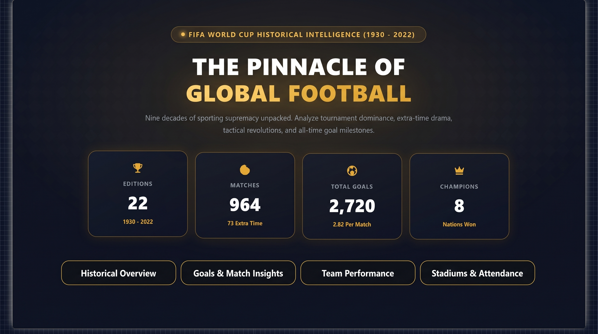

FIFA Men's World Cup Historical Analytics (1930 – 2022)
Audited 92 years of World Cup history across 22 tournaments, 964 matches, and 40M+ attendees. Built an automated Python ETL pipeline and engineered an audited Star Schema data model with custom DAX measures evaluating host advantage and scoring dynamics.